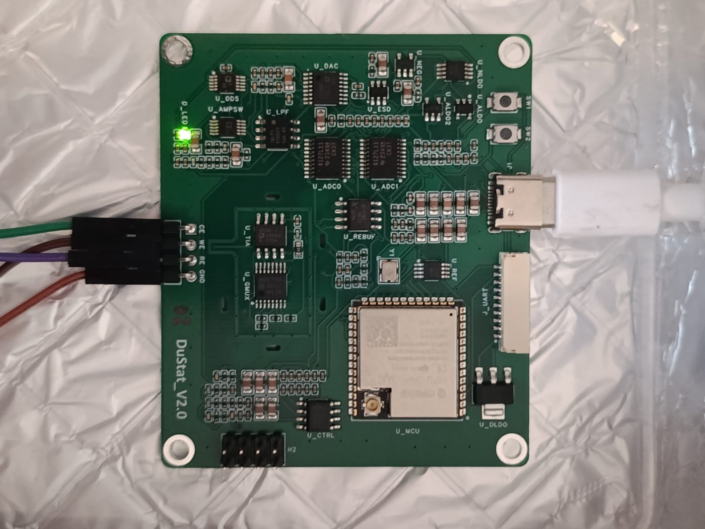

Electrochemical instrument · own design
DuStat: 24-bit potentiostat with impedance spectroscopy
A 3-electrode potentiostat on a 4-layer board. It uses two 24-bit ADS127L11 ADCs, a DDS excitation source and an ADA4530 femto-ampere transimpedance stage behind a guard ring, with an ESP32-S3 for control. It runs 8 techniques from CV to EIS over a ±2.5 V window. I did the complete instrument: schematic, layout, firmware, desktop GUI and a written validation report. Two board revisions and two built units taught me the most from the bugs: a charge pump that latched, a DAC on the wrong supply, and mains hum aliasing through an averaging window that was 0.75 of a mains period.
6.4×lower open-input noise after two firmware fixes, found from the noise spectrum
0.5 %current accuracy on a calibrated dummy cell, all DC techniques
3.5 %agreement with a commercial potentiostat on the same electrode
Mixed-signal PCBLow-noise analogESP32-S3EISPython GUI